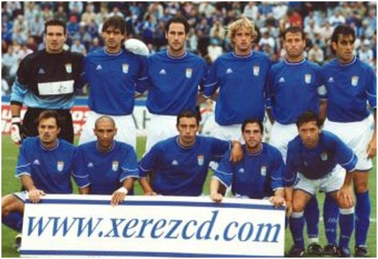

History smiles on Xerez: 16 wins to Badajoz's 2 in 24 meetings

Photo: Diario de JerezThe blue-and-whites hold a clear historical advantage over an opponent they have not lost to since 1991 and whom they beat 5-3 in their most recent meeting in Segunda División
Xerez CD host Badajoz this Sunday in their first home league match of the season at the blue-and-white stadium, a game in which the head-to-head record between the two clubs clearly favours Xavi Molist's side. The two teams have met 24 times throughout their history, with a record heavily in favour of the Xerecistas: 16 blue-and-white wins, 6 draws and just 2 victories for the side from Badajoz.
Almost total historical dominance
The first meeting between the two sides dates back to 18 September 1949, a 3-0 win for Xerez. Since then, Xerez have called the tune in most of the encounters, leaving Badajoz with very little to celebrate in the overall count.
In fact, Badajoz's last win goes back to 1991, a narrow 0-2, at a time when both clubs were playing in Segunda B. Since then, more than three decades of shared history have not smiled on the Extremadura side again.
The most recent meeting, with a hatful of goals
The most recent clash between the two teams was played on matchday 41 of Segunda División, a thrilling 5-3 win for Xerez, a result that reflects just how well the blue-and-whites have historically fared against this opponent.
With that backdrop, Xerez CD go into Sunday's home debut of the season with the confidence that comes from an overwhelmingly favourable record, although Molist's side know that every match is a new story and that Badajoz will arrive eager to break that negative trend.
🇪🇸 Leer en español ← Back to home